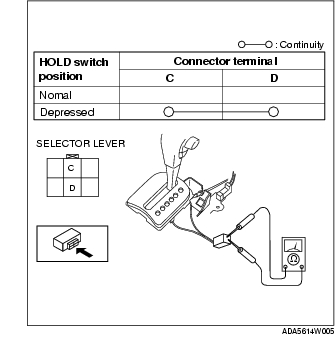

Hold switch inspection [FN4A-EL]
Operating Inspection
1. Turn the ignition switch to the ON position (engine OFF).
2. Verify that the HOLD indicator light is not illuminated. Depress the HOLD switch and verify that the HOLD indicator light illuminates.
Voltage Inspection
1. Remove the console.
2. Turn the ignition switch to the ON position (engine OFF).
3. Measure the voltage at the HOLD switch connector.

Continuity Inspection
1. Disconnect the negative battery cable.
2. Remove the console.
3. Disconnect the HOLD switch connector.
4. Verify continuity as indicated in the table.

- • If the switch is okay, inspect the wiring harness. (HOLD switch-PCM, HOLD switch-Body ground)
- • If there is any malfunction, replace the HOLD switch. (See HOLD SWITCH REMOVAL/INSTALLATION [FN4A-EL].)
5. Connect the HOLD switch connector.
6. Install the console.
7. Connect the negative battery cable.